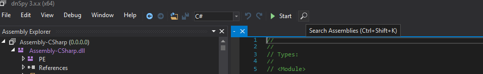
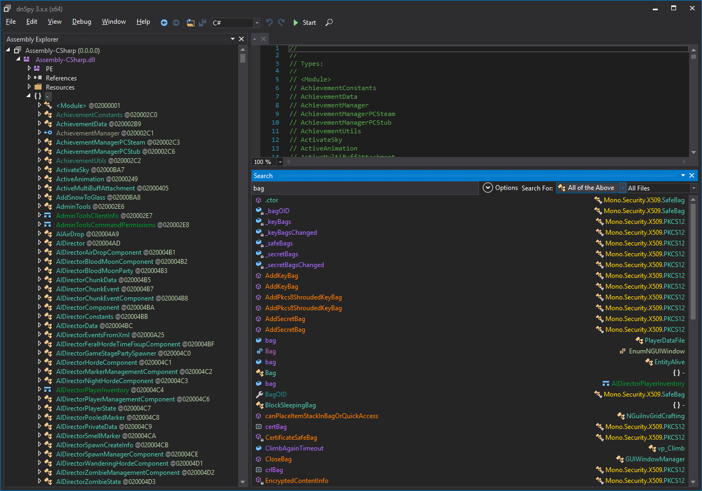
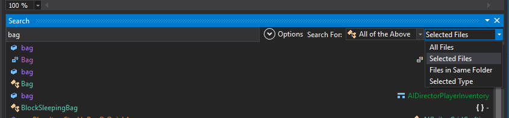
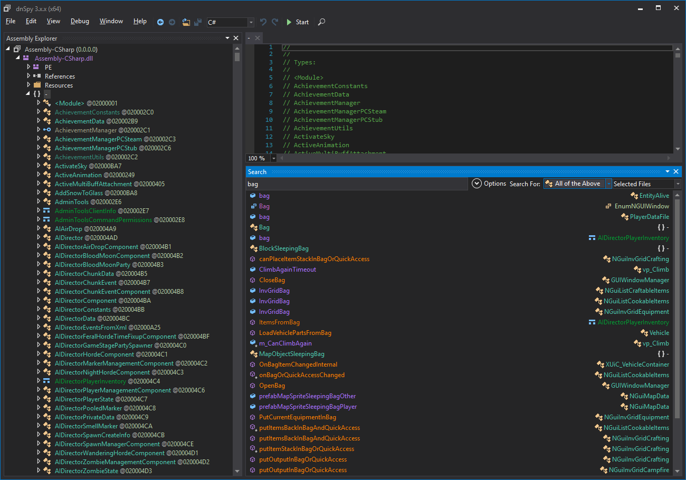
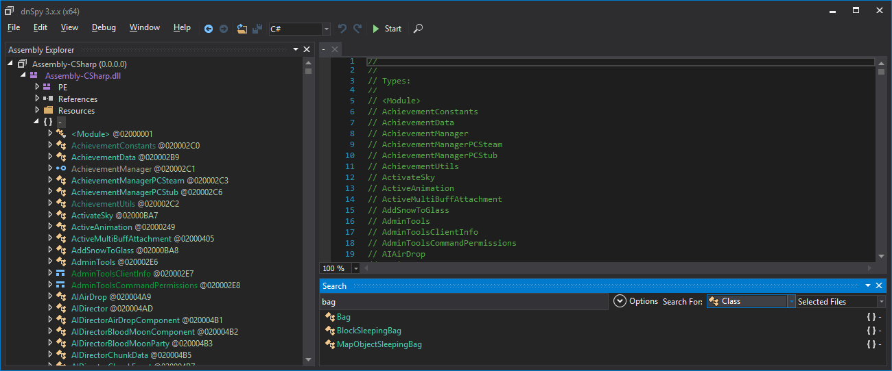
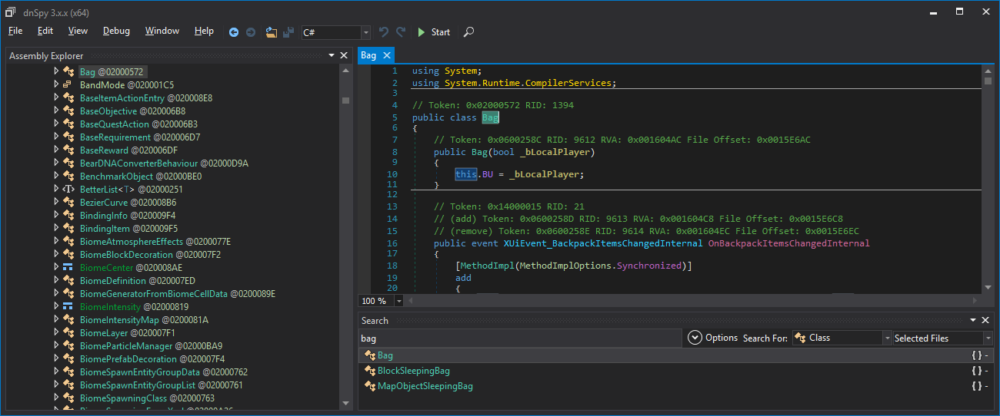
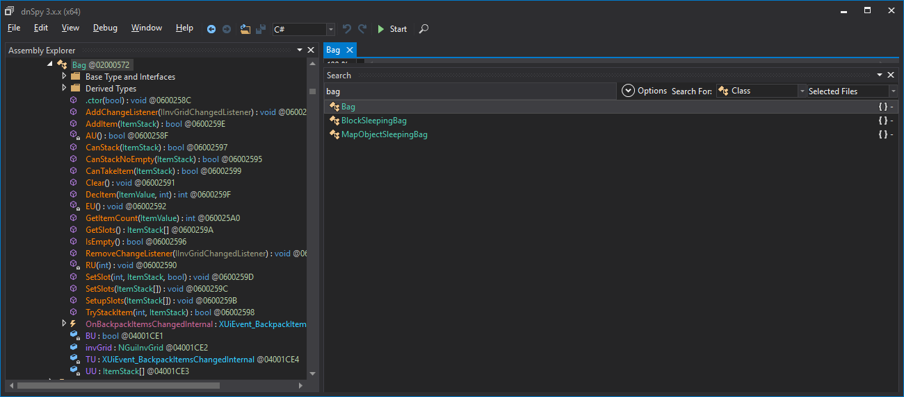

In the earlier parts of the Tutorial, we covered the Bigger Back Pack mod for SDX. We are going to revisit some of the mechanics of that mod, by exploring the DLL and finding out exactly what SDX did automatically for us.
For this section, we are going to follow this 7 Days To Die Forum Post.
For the Bigger Back Pack mod, we want to edit the Bag class.
Look for the Magnifying Glass on the main window, and click on it.

The "bag" search comes up with a lot of different references. You can manually look through, trying to identify what you are want to change. You could also try changing the filter.

"All Files" Filter

By default, it searches for "All files" that are opened. You can narrow it down by "Selected Files".

That narrowed the list down a bit. The Bag reference we are searching for is a C# class.
In the "All of the Above", we can further choose out filter by Class

Now we only see three: Bag, BlockSleepingBag, and MapObjectSleepingBag.
For this Tutorial, we are just interested in the "Bag" class. Double click on it to be taken to the class.

You'll notice that the Bag is highlighted over the Assembly Explorer, and the code is open on the other window. Click on the arrow by the "Bag", in the Assembly Explroer:

This shows all the methods that are the type class. You may click on each one to view the contents of it.The one we are interested in, is just the "Bag".
Created with the Personal Edition of HelpNDoc: Easily create Help documents